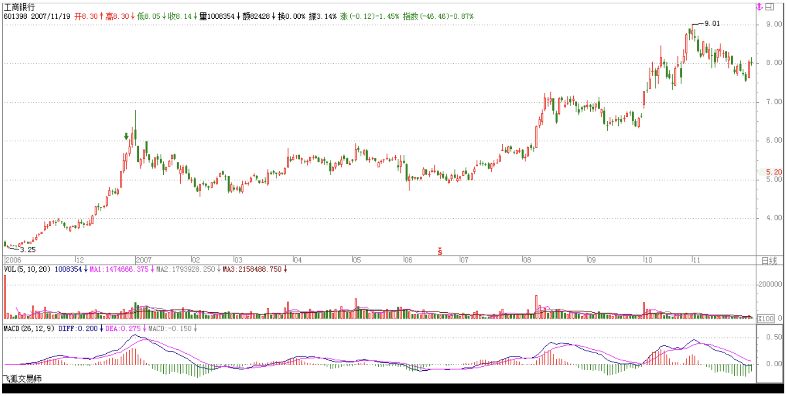
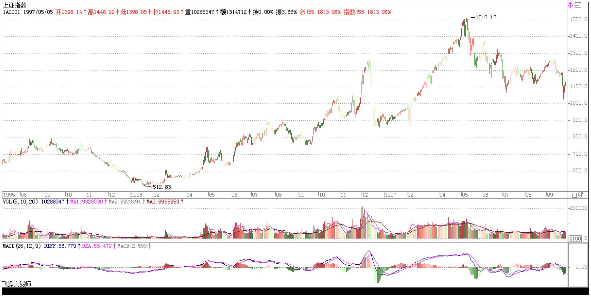
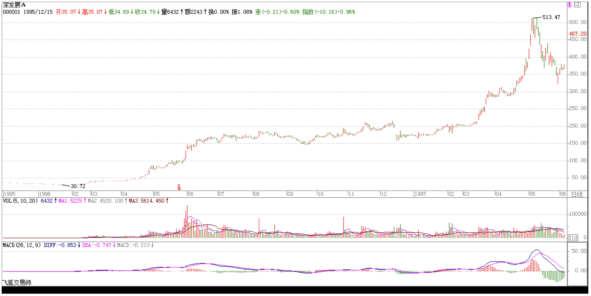

教你炒股票19：学习缠中说禅技术分析理论的关键
2006/12/27 15:18:10
本ID看了看各位的问题，发现前面说了那么多，似乎真能看明白的没几个。为什么？很简单，估计来这里的人都没受过太严格的数学训练，如果受过严格的数学训练，本ID现在所说的，简直就是最简单不过的东西。这里的整个推导过程，和几何里的毫无区别，初中学过几何的，都应该能明白。所以要看明白，最好先把自己的数学神经先活动起来。有一句不大中听的话，像孔男人之类的文科生，是很难炒什么股票的。别说一般的散户了，就算当庄家，本ID所见过的庄家肯定是全国最多的，有一个很明显的规律，就是文科生当庄家，基本死翘翘。这可不是玩笑话，是直接经验的总结。孔男人之类的文科生最大特点就是脑子缺根筋––数学思维的筋。
其次，请把以前学过的一切技术分析方法先放下，因为本ID这里所说的，和所有曾有的技术分析方法的根本思路都不同。一般的技术分析方法，或者用各种指标，或者用什么胡诌的波段、波浪，甚至江恩、神经网络等等，其前提都是从一些神秘的先验前提出发。例如波浪理论里的推动浪5波，调整浪三波之类的废话，似是而非，实战中毫无用处，特别对于个股来说，更是没用。至于什么江恩理论，还有什么周期理论、神经网络之类的，都是把一些或然的东西当成必然，理论上头头是道，一用起来就错漏百出。那些支持位、阻力位，通道线、第三浪之类的玩意，只能当庄家制造骗线的好工具。
如果真明白了本ID的理论，就会发现，其他技术分析里所说的现象，都能在本ID的理论中得到解释，而且还可以给出其成立的相应界限。例如，一个股票新上市后直接向下5波后反手就向上5波形成V字型，按波浪理论，就无法得到解释，而用缠中说禅走势中枢的定理，这是很容易解决的问题。那些理论都是把复杂的走势给标准化成某种固定的模式，就如同面首宣称不带套的爱不是爱一样可笑。对于庄家来说，对一般人所认识的所谓技术分析理论，早就研究得比谁都精通，任何坐过庄的人都知道，技术图形是用来骗人的，越经典的图形越能骗人。但任何庄家，唯一逃不掉的就是本ID在分析中所说的那些最基本的东西，因为这些东西本质上对于市场是“不患”的，只要是市场中的，必然在其中，庄家也不例外。就像任何的大救星，都逃不掉生老病死。
这里必要强调，技术分析系统在本ID的理论中只是三个独立的系统之一，最基础的是三个独立系统所依据的概率原则所保证的数学上的系统有效性。但技术分析系统之所以重要，就是因为对于一个完全没有消息的散户来说，这是最公平、最容易得到的信息，技术走势是完全公开的，对于任何人来说，都是第一手，最直接的，这里没有任何的秘密、先后可言。技术分析的伟大之处就在于，利用这些最直接、最公开的资料，就可以得到一种可靠的操作依据。单凭对技术分析的精通与资金管理的合理应用，就完全可以长期有效地战胜市场，对于一般的投资者来说，如果你希望切实参与市场之中，这是一个最稳靠的基础。
本ID觉得，如果你光只是想挣点钱，那么没必要学什么技术分析，在牛市里，买基金就可以了，特别是和指数相关的基金，你就至少能跟上指数的涨幅。但市场不单单是为挣钱而存在的，市场是一个最好的修炼自己的地方，人类的贪婪、恐惧、愚蠢，哪里最多？资本市场里，每时每刻都在演绎着。在这个大染缸里修炼自己，这才是市场最大的益处。战胜市场，其实就是战胜自己的贪婪、恐惧、愚蠢，本ID的理论只是把市场拔光给各位看，而拔光一个人并不意味着就等于征服一个人，对于市场，其道理是一样的。不干，不可能征服市场。对于市场来说，干就是一切。技术分析的最终意义不是去预测市场要干什么，而是市场正在干什么，是一种当下的直观。在市场上所有的错误都是离开了这当下的直观，用想象、用情绪来代替。例如现在，还有多少人为工行的上涨而忿忿不平，却不能接受这样一个当下最直观的事实。多次反复强调，牛市第一波涨的就是成分股，工行这最大的成分股不涨，还有谁涨？96年的牛市，最大的成分股就是发展，那时候比这不更厉害多了，工行这又算得了什么？



市场是有规律的，但市场的规律并不是显而易见的，是需要严格的分析才能得到。更重要的是，市场的规律是一种动态的，在不同级别合力作用下显示出来的规律，企图用些单纯的指标、波段、波浪、分型、周期等等预测、把握，只可能错陋百出。但只要把这动态的规律在当下的直观中把握好、应用纯熟，踏准市场的节奏，并不是不可能的。最后布置一个作业：在所谓的波浪理论里，有一个所谓的结论，大概意思是说第四浪的调整一般在第三浪的第四子浪范围内，用缠中说禅走势中枢的相关定理分析该结论成立的范围以及局限性，相应给出类似走势的一个更合理的理论分析与实际操作准则。
回复
缠中说禅 2006/12/27 15:25:27
大盘没什么可说的，选股就更没什么可说的，就是成分股，没动的都要动的。这话说了无数遍了，以后不说了。
缠中说禅 2006/12/27 15:29:37
这种大牛市炒股票是最简单的，成分股就那300只，如果觉得那太多，就看上海50，第一轮反复围绕这几十只股票，不断轮炒就完了。而第二轮是炒成长股，那是以后的事情了。关键是消灭一切熊市心态，这话也说过很多次了，以后也不说了。
缠中说禅 2006/12/27 15:32:13
[匿名] iris
2006-12-27 15:28:58
成份股中现在还没动过应该不好找了，我要一个个找找看。缠姐每天都这么准时，真是太佩服了。
=======
谁叫你现在才找？现在找，风险就大多了。一大早就说了，拿着成分股，好好学技术，两头不耽误。牛市的第一轮是最轻松的，基本不用费脑子挑股票。第二、三轮就要累点了。
不明白的，去看看发展96、97年的走势。
缠中说禅 2006/12/27 15:33:50
[匿名] cc
2006-12-27 15:31:20
mm，第一阶段是不是大盘每次调整都先涨银行地产?
==
成分股，你说联通算什么？但银行股肯定是有份的，因为权重最大。
缠中说禅 2006/12/27 15:40:50
[匿名] 欲哭无泪
2006-12-27 15:31:05
楼主： 请您看看孚日股份．那可是我的全部家当，血汗前哪！
现在被套，自杀的份都有了！怎么办哪！
能不能破例一次，告诉我咋办呀！谢谢
=======
对次新股，早说过了，上市第一天的高价不放量突破，看都不用看，除非在下面出现第一类的买点。这样的好处就是不用浪费时间。现在该股走成这样，就等吧，反正离箱顶也不远。
再说一次，真正的高手就是顺着市场最简单的方向去，早说过什么呢？一定要紧跟大部队，别和散兵游勇玩，那些人自身都难保，有什么可玩的？牛市第一阶段，大资金都忙着搞成分股，管这些小盘玩意的，都是小玩意。等吧，最终都要涨的。
缠中说禅 2006/12/27 15:44:03
[匿名] 去
2006-12-27 15:30:18
楼主你再多几条筋，也免不了各种生老病死，这也是我对你下的结论。事业也一样的！
===
生老病死的，是你，但又何曾是你？别自我憋屈了。
缠中说禅 2006/12/27 15:44:27
没事，先下，再见。
缠中说禅 2006/12/27 20:55:17
wy1499
2006-12-27 16:20:50
楼主，1、“缠中说禅走势中枢定理一”：在趋势中，连接两个同级别“缠中说禅走势中枢”的必然是次级别以下级别的走势类型。
我现在觉着，盘整走势与趋势走势的连接是不是可以在盘整中枢结束后，直接跟着趋势的第一个走势中枢，强庄有可能用这种图形来做最后的洗盘，只是我不知道逻辑上该怎么来证明。
====
这个问题以后会说到，关键是前后两个中枢不能有重叠，否则只是构成更大级别的盘整。
2、还有缠中说禅走势中枢定理三中的两个次级别走势的组合只有三种：趋势+盘整，趋势+反趋势，盘整+反趋势。 我觉得这第三种组合不大好理解，走势中枢本身就是一种盘整图形，在后面紧跟着盘整，那还怎么区分出来，这段盘整是否属于前段走势中枢内呢？ 再有假设命题正确，盘整之后为什么只有反趋势，就不能出现趋势呢？结束前一个走势中枢，盘整后再继续趋势走势，不是很正常吗？ 盼解惑！ ===
趋势+盘整中的趋势中的价值中枢与盘整中的价值中枢的级别是不同的，后者更高。不能单纯地谈论中枢，必须结合级别。
注意谈论这个问题的前提，谈论的是中枢的离开与返回问题。如果以一个次级别的盘整类型离开中枢，返回当然不可能也是盘整类型，否则就构成一个大级别的盘整类型，这就与原中枢维持的前提矛盾了。
对于围绕中枢的运动，离开中枢的趋势是正趋势，返回的是反趋势。
缠中说禅 2006/12/27 21:00:15
[匿名] 空读
2006-12-27 20:43:28
缠禅讲的第一买点和第一卖点都是由背驰形成.
走势结束转向的话一定会出现背驰吗?
涨势疲软构成背驰,下跌后反弹构成背驰.
如果等背驰等不到,下跌以后等反弹,结果会出现大幅亏损被套.
背驰的形成应该是这一波走势的涨跌幅度和速度比上一波弱.
由此能判定下一步趋势结束吗?
背驰之后还有背驰的情况也不少,是不是也有一个成功率,概括市场上的大多数情况.
===
为什么下跌等反弹？出货永远都是在上涨中出的，一旦出现背驰性的上涨，就要出货，当然，这和你操作的级别有关，如果你是长线的，1分钟图上的背驰当然不用考虑。
下跌才出货，都是有毛病的行为。
背驰只可能出现一次，怎么可能一次又一次。你认为的一次又一次的，根本就不是本ID所说的背驰，注意，背驰是两个同级别趋势之间对比产生的。先把什么叫背驰搞清楚。
缠中说禅 2006/12/27 21:02:30
[匿名] iris
2006-12-27 18:08:13
我发现我越看越不太明白了，请问禅姐，是不是一个走势中枢中并不是所有k线都要在这个股价范围内。像580991的11.8到11.28日走势中枢中（0.677,0.803），11月15号的k线就没在这个范围，11月17到11月27日的最低价都比0.677高。请缠姐指教。
实在不好意思啊，遇到我这样的新手加笨学生。
==
当然不是所有都在其中，否则怎么会去探讨离开与返回中枢的运动定理？都在其中了，哪里还有什么离开、返回？
缠中说禅 2006/12/27 21:05:20
[匿名] 空读
2006-12-27 20:21:58
本级的盘整形成高一级的走势中枢吧
“缠中说禅走势分解定理一”：任何级别的任何走势，都可以分解成同级别“盘整”、“下跌”与“上涨”三种走势类型的连接。
“缠中说禅技术分析基本原理二”：任何级别任何完成的走势类型，必然包含一个以上的缠中说禅走势中枢。
“缠中说禅走势分解定理二“：任何级别的任何走势类型，都至少由三段以上次级别走势类型构成。
说个极端的情况:有的股一字涨停封盘上涨,日线成上天梯状,如果某一天由一前一天的一字涨停改为一字跌停,日线图下天梯,st和pt类股票的走势比较多,这种上涨下跌的走势就无法分解成次级别的三段走势了,也没有走势中枢吧
===
当然有，最低级别的中枢是怎么定义的？不记得了？一字线构成的就是最低级别的价值中枢。先把中枢的定义搞清楚。
缠中说禅 2006/12/27 21:12:37
[匿名] 空读
2006-12-27 21:04:39
级别是如何划分的?两个级别之间差是多少,月线与周线差4倍,周线与日线差5倍,
日线与60分钟线差4倍,日线与30分钟钱差8倍,
日线的下一级应该以哪一种为准?再下一级是多少?
===
一般用5分钟、30分钟、日线、周线、月线就足够。
股票的走势:不上就下,要么盘整.
上与盘整与下之间的分界是什么,上涨的幅度高出盘整区间多少算是上涨,下跌幅度超出盘整区间多少算下跌,在1秒的分时线上好确定
同一价格是横盘盘整,涨一分算上,跌一分算下,到看1分钟以上走势里上涨和盘整的趋势在走出来之前难以确定啊,突破盘整区域又返回
三角形整理的也总分不清.
总还是不确定当前的状态是什么,是趋势还是盘整.
===
根本连什么叫上涨、下跌都没搞清楚，先把前面相关的定义复习一下。
缠中说禅 2006/12/27 21:16:25
[匿名] 狐
2006-12-27 20:25:37
缠女，请教个问题，你说美国的强大是干出来的，不是道德出来的。
我,A兄,B兄3人是好朋友，A兄和女友分手了，B兄马上和A兄女友走在了一起，B兄是否有道德，那么我们有必要从另外个角度去分析B兄是对的么？
===
首先别把任何人当成自己的私有财产，人连自己都从来未曾拥有，还能拥有什么？把这个前提拿掉，一切问题都成了假问题。
缠中说禅 2006/12/27 21:19:29
[匿名] 花蝴蝶
2006-12-27 21:13:33
有问题请教缠姐：
缠中说禅走势中枢：某级别走势类型中，被至少三个连续次级别走势类型所重叠的部分
1 是三个连续次级别中的走势类型，还是次级别中连续三个走势类型？
2 能把重叠说得形象一点吗？
我比较愚顿，理解起来很困难。希望缠姐能耐心赐教。
万分感谢！！！
===
看18里的公式，最精确的数学公式了，一看就明白。“连续次级别”是什么意思？中文有这样的表达吗？
三个/连续/次级别走势类型
缠中说禅 2006/12/27 21:23:01
太晚了，先下，再见。